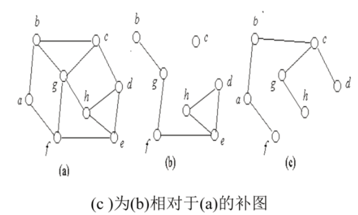
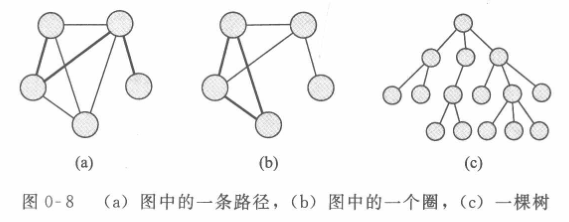
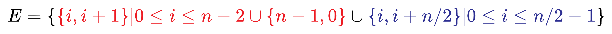

相关资源
-《计算理论导引》第三版 pdf
链接：https://pan.baidu.com/s/1G94BC9U3ZMoRLQ1phGl07Q 提取码：qycz
第 0 章 绪论
该课是计算机科学的理论课。
- 计算理论
- 研究理论计算机的科学
- 研究计算机的理论模型，研究计算机的本质，也就是把计算机看成一个数学系统。（因为计算机科学的基本思想和模型在本质上是数学——离散的。）
0.1 自动机、可计算性与复杂性
0.1.3 自动机理论
How to define a computer?
Automata theory
- 形式语言与自动机理论——阐述了计算的数学模型的定义和性质
- 正规文法与有限自动机（正则语言）（第 1 章）
- 上下文无关文法与下推自动机（上下文无关语言）（第 2 章）
- 图灵机（递归可枚举语言）（第 3 章）
0.1.2 可计算性理论
Are there problems that a computer cannot solve?
Computability theory
- 可计算性理论——把问题分成容易计算与难计算的
- 什么是可计算？（第 4-6 章）
0.1.1 计算复杂性理论
If so, can we find one such problem?
Complexity theory
- 计算复杂性理论——把问题分解成可解的和不可解的
- 时间复杂性（第 7 章）
- 空间复杂性（第 8 章） -（第 9-10 章）
0.2 数学概念和术语
Unlike other CS courses, this course is a MATH course..
We will look at a lot of definitions, theorems and proofs
-
基本数学概念与术语回顾
- Set 集合
- Sequence 序列
- Function 函数
- Graph 图表
- String 串
- ..
-
证明技术
- construction 构造法
- contradiction 反证法
- induction 数学归纳法
-
数学 Mathematics Review
- 离散数学
- 数理逻辑
- 集合论
- 图论
0.2.1 集合（Set）
Python3 集合 | 菜鸟教程 (runoob.com)
0.2.2 序列（Sequence）和多元组（tuples）
值可变化：
值不可变化：
序列：
A sequence of items is a list of these items in some order.
元组
Finite sequences are also called tuples
-
is a 3-tuple
-
is a 4-tuple
集合与序列可以作为其他集合或序列的元素。
幂集：
所谓幂集（Power Set），就是原集合中所有的子集（包括全集和空集）构成的集族。
设有集合 A，由 A 的所有子集组成的集合，称为 A 的幂集，记作，即：。
如
则
笛卡尔积：
如
则
集合自身的笛卡尔积可以写成：
笛卡尔积运算的性质:
- 若 、 中有一个空集，则
- 当 且 、 都不是空集时，有
- 当 、、 都不是空集时，有
- 笛卡尔积满足交和并的分配律:
0.2.3 函数和关系
函数又称为映射，若，则称 把 映射为 。
D：domain（定义域）：函数所有可能的输入组成的集合。
R：range（值域）：函数所有可能的输出组成的集合。
如对于整数的加法函数：
定义域 是二元的，值域 是一元的。
将某些大家熟悉的二元函数写为特殊的中缀表示法的形式，如 ，代替采用前缀表示法。
到 有多少个不同的关系？
如果 ，则 ，而关系是 的子集， 的子集共有 个，所以， 到 的关系共有 个。
设 是集合 上的二元关系， 的性质有以下 5 种：
- 自反性：对于每个 ，有 。关系矩阵主对角线上全为 1，关系图中每个顶点都有环。如实数集合上 关系，集合之间 关系。
- 反自反性：对于每个 ，有 。关系矩阵主对角线上全为 0，关系图中每个顶点都没有环。如实数集合上 关系，集合之间 关系。
结论：
是 上的二元关系，则（ 表示恒等关系，关系矩阵主对角线上全为 1）：
- 是自反关系的充要条件是 。
- 是反自反关系的充要条件是 。
- 对称性：若 ，有 。关系矩阵是对称矩阵，在关系图中，若两个顶点之间有边，则一定是一对相反关系的边。例如同学关系，兄弟关系。
- 反对称性：若，且 ，有。在关系矩阵中，如果 。关系图中，如果两个顶点之间有边，一定是一条有向边。例如父子关系，上下级关系。
是对称的。
是对称的也是反对称的。
不是对称的也不是反对称的。
是反对称的。
存在关系既不是对称的，也不是反对称的（关系图中两个顶点之间的边既有有相反关系的边，也有有向边）。也存在关系既是对称的，也是反对称的（关系图中两个顶点之间没有边）。
- 传递性：若 且 ，则有 。关系图中，如果顶点 到 有边， 到 有边，则从 到 有边。例如上下级关系，祖先关系，实数集合上 关系，集合之间的 关系。
等价关系:
- 自反性
- 对称性
- 传递性
如关系 R：x x 与 y 年龄相同 ;
自反 : x 与 x 年龄相同 ; 自反 成立 ; 对称 : x 与 y 年龄相同 , y 与 x 年龄相同 ; 对称 成立 ; 传递 : x 与 y 年龄相同 , y 与 z 年龄相同 , x 与 z 年龄相同 ; 传递 成立 ; 等价关系 : 该关系是 自反 , 对称 , 传递 的 , 因此该关系 是等价关系 ;
复合关系：设 为 到 上的关系， 为 到 上的关系，则 称为 和 的符合关系，表示为：
例如若 是 的母亲， 是 的妻子，则 是 的岳母。
关系的复合不满足交换律，但是满足结合律。
关系的 次幂：设 是 上的二元关系，，则关系的 次幂 定义为：
说明：如果 是 到 的关系，且 ，则 是无意义的，因为 是无法复合的。
定理：设 是集合 上的二元关系，，，则
- （称第一指数律）
- （称第二指数律）
此定理证明可以用数学归纳法加以证明。
第三指数律 一般是不成立的（只要交换律不成立，第三指数律不成立）
- 相当于关系矩阵作矩阵乘法
逆关系：设 为 到 的二元关系， 的逆关系记为 (或 )，即：
（把序偶对颠倒一下顺序，关系中的元素与逆关系中的元素一一对应）
显然，若 ，则
如 关系的逆关系为 。若 则 。
- 是对称的，当且仅当
- 是反对称的，当且仅当
关系 的关系图，是将关系 的关系图中的箭头方向反向即可。
关系 的关系矩阵 是 的关系矩阵 的转置矩阵。
0.2.4 图（graph）
- 图
- 路径（path）：由边连接的顶点序列。
- 如果每一对顶点之间都有一条路径，则称这个图为连通图。
- 有一个平凡的结论：连通图 中，任意两个节点之间必是连通的。
- 如果一条路中所有的边均不相同，则成为迹。
- 如果一条路中所有的结点均不相同，则称为通路。
- 迹不一定是通路，但通路一定是迹。
- 简单路径（simple path）：没有顶点重复的路径。
- 圈（cycle）：全如果一条路径的起点和终点相同，则称这个图为一个圈。（除了顶点是相同的，其他都不相同）
- 如果一个圈包含至少 3 个顶点，并且除起点和终点之外没有顶点重复，则称它是一个简单圈。
- 如果每一对顶点之间都有一条路径，则称这个图为连通图。
- 点割集和割点：
- 设无向图 为连通的，若有结点集 ，使得图 删除了 所有结点后，所得的子图是不连通的，而删除了 的任意真子集后，所得的子图仍然是连通图。则称集合 为图 的点割集。若某一结点就构成点割集，则称该结点为割点。
- 边割集和割边：
- 设无向图 为连通的，若有边集 ，使得图 删除了 所有边后，所得的子图是不连通的，而删除了 的任意真子集后，所得的子图仍然是连通图。则称集合 为图 的边割集。若某一结点就构成点割集，则称该结点为割边（或桥）。
- 对于任何一个图 ，有 （点割集数量 边割集数量 最小的度）
- 不含有平行边和环的图称为简单图。
- 简单图 中若每一对结点间都有边相连，则称该图为完全图。
- 有 个结点的无向完全图记作 。
- 个借点的无向完全图 的边数为 。
- 有 个结点的无向完全图记作 。
- 简单图 中若每一对结点间都有边相连，则称该图为完全图。
- 相对于图 的补图：设图 是图 的子图，若给定另外一个图 使得 ，且 中仅包含 的边所关联的节点。则称 是子图 的相对于图 的补图。
- 路径（path）：由边连接的顶点序列。
{kind=link}

(c)为(b)相对于(a)的补图，但是(b)不是(c)相对于(a)的补图（(c)的补图没有 c 点）。
- 树（tree）：连通且没有简单圈的图。
- 有时专门指树的一个顶点，把它称为这棵树的根（root）。
- 一棵树中度数为 1 的顶点称为这棵树的树叶（leaf）。
{kind=link}

0.2.5 字符串和语言
Python3 字符串 | 菜鸟教程 (runoob.com)
字母表（alphabet）：任意一个非空有穷集合。字母表的成员为该字母表的符号
字符串（string）是一个 sequence。
语言（language）：字符串的集合（A set of strings is called a language.）。
0.2.6 布尔逻辑
否定、合取、析取、条件、双条件定义及 LaTex 公式_老实人小李的博客-CSDN 博客_latex 条件公式
| 名称 | 符号 |
|---|---|
| 非（NOT） | |
| 合取（AND） | |
| 析取（OR） | |
| 异或（XOR） | |
| 等值 | |
| 蕴涵 |
0.3 定义、定理和证明
0.4.1 构造性证明（proof by construction）
在数学中，构造性证明是证明方法的一种，通过直接或间接构造出具有命题所要求的性质的实例来完成证明。
绝大多数证明都是基础理论问题，都是用构造性证明。
现采用构造性证明方法证明以下定理。我们定义：如果图中每一个顶点的度数都为 k，则称这个图是 k 正则的（k-regular）。
- 对于每一个大于 2 的偶数 ，存在一个有 个顶点的 3 正则图。
- 证明：设 是大于 2 的偶数。现构造有 个顶点的图 , 的顶点集 ，边集为

- 1：将 个点均匀排列在一个圆上，对每一个顶点，连接其左右邻点各为一条边。
- 2：第三边与其对点相连。
- 按照上面的定义，证得该命题为真。
- 证明：设 是大于 2 的偶数。现构造有 个顶点的图 , 的顶点集 ，边集为
{kind=link}
0.4.2 反证法（proof by contradiction）
反证法是“间接证明法”一类，是从反方向证明的证明方法，即：肯定题设而否定结论，经过推理导出矛盾，从而证明原命题。
0.4.3 归纳法（proof by induction）
第一数学归纳法与第二数学归纳法 - 知乎 (zhihu.com)
第一数学归纳法可以概括为以下三步：
归纳奠基：证明当 n=1 时命题成立；
归纳假设：假设当 n=k 时命题成立；
归纳递推：由归纳假设推出当 n=k+1 时命题也成立．
一般我们都是使用第一数学归纳法，但是对于第二数学归纳法，在算法导论中也是经常使用。